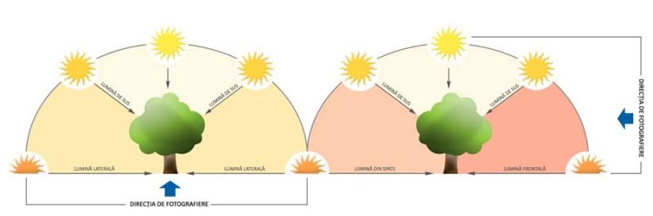
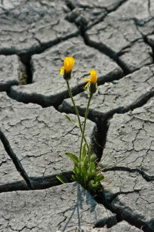
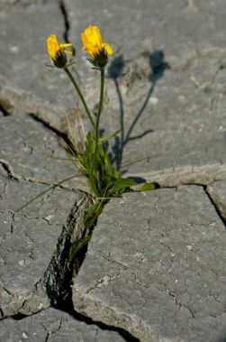
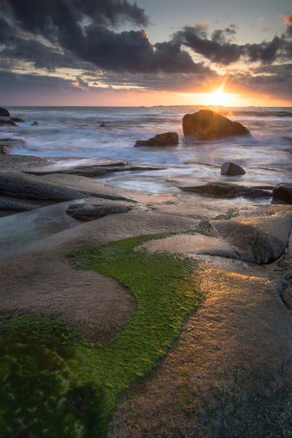

Cursul 3 - Lumina in fotografie
"Fotografia, un tablou pictat de soare fara educatie artistica." - ambrose Bierce
"Fotografia, un tablou pictat de soare fara educatie artistica." - ambrose Bierce
acest tip de lumina apare atunci cand vine direct de la
soare sau orice alta sursa. Lumina obtinuta are tendinta
de a fi puternica si directionala.
in astfel de conditii avem contraste puternice, cu zone
de umbre adanci si zone de luminozitate mare. Culorile
sunt redate in general bine, dar se vor pierde detalii in
zonele cu un contrast ridicat.
avantaje:
aceasta lumina, este cea in care se lucreaza cel mai usor
si se obtine atunci cand fotograful se afla intre sursa de
iluminare si subiect.
Umbrele obtinute sunt ascunse in spatele subiectului,
iar din cauza luminii plate, cadrul nu are dimensiune si
profunzime, ceea ce reduce semnificativ dramatismul
unei imagini.
in fotografia de peisaj, acest tip de lumina este de evitat,
deoarece cadrul nu are dimensiune si dinamism, ceea
ce reduce semnificativ dramatismul unei imagini. La
portret aceasta lumina va fi deranjanta nu numai pentru
subiect, ce va avea lumina in ochi, dar si pentru cel ce priveste imaginea. Fata personajului
va aparea plata si fara perspectiva pe care o ofera uneori umbrele.
Dezavantaje:
in schita de mai jos puteti vedea cum evolueaza lumina in functie de directia ei si care
este unghiul sub care cade pe subiect. in partea din stanga avem evidentiate lumina laterala
si lumina de sus, si putem observa si culoarea acesteia data de culoarea soarelui din schita.
Cu cat este mai razanta cu solul, cu atat este mai calda. Se raceste pe masura ce soarele
urca mai sus pe bolta. Lumina poate fi considerata laterala pana cand ajunge sa cada sub un
unghi de aproximativ 45 de grade fata de subiect, bineinteles ca nu conteaza daca vine din
stanga sau din dreapta acestuia.
Partea a doua a schitei arata lumina frontala si contralumina si se schimba si unghiul de
fotografiere pentru a putea evidentia aceste doua cazuri. Lumina frontala apare atunci cand
avem soarele in spatele nostru, iar cea din spate cand acesta este in fata noastra.
Directia este calculata in functie de cum cade lumina pe subiect si nu in functie de cum este
pozitionat fotograful fata de aceasta.
Fiecare tip de lumina va fi tratat in amanunt in continuare, ce este insa important de amintit
este ca lumina poate avea nenumarate alte unghiuri, acestea patru fiind cumva cele mai simple
de explicat mai generic.

Un fascicul de lumina alba ce trece printr-o prisma, se
descompune intr-un fascicul conic ce contine culorile
curcubeului: rosu, portocaliu, galben, verde, albastru,
indigo si violet. Fiecare dintre aceste culori se evidentiaza
datorita lungimii de unda diferita.
Dintre toate culorile formate, numai trei sunt necesare
pentru formarea celorlalte. acestea, numite culori
primare aditive, sunt rosu, verde si albastru. Toate
celelalte se numesc binare si se pot obtine prin
amestecarea celor trei. Combinate in proportii egale,
cele trei culori primare formeaza lumina alba.
Culorile primare substractive, sunt formate din cian,
magenta si galben, iar prin combinarea lor in proportii
egale obtinem negru.
Culorile aditive definesc lumina si in acelasi timp si
echipamentele ce emit sau folosesc aceasta lumina,
precum camera foto sau monitorul computerului.
Culorile substractive definesc lumina reflectata si sunt
folosite pentru tiparire.
Pentru a putea intelege mai bine culorile, le putem
alcatui in roata culorilor, unde culorile primare sunt
pozitionate simetric in zone opuse.
Pentru a putea intelege mai bine diferenta dintre aceste doua tipuri de lumina,
haideti sa facem o comparatie intre fotografiile de mai jos. In prima avem lumina din spate,
cu umbre puternice, cu un contrast ridicat si cu amplificare de culoare in suprafetele
translucide ale petalelor si frunzelor. in a doua fotografie lumina cade frontal pe floare,
avem culori bine redate, detalii mai multe in umbra, insa nu avem dramatismul din prima imagine.

Chiar daca o fotografie in contralumina va fi mai greu de expus si va genera mai
multe probleme tehnice, rezultatele obtinute, asa cum se pot vedea si in imaginea alaturata,
merita tot efortul nostru.
Parcul National Rodna - foto 1 si 2; Uttakleiv, Lofoten, Norvegia - foto 3

